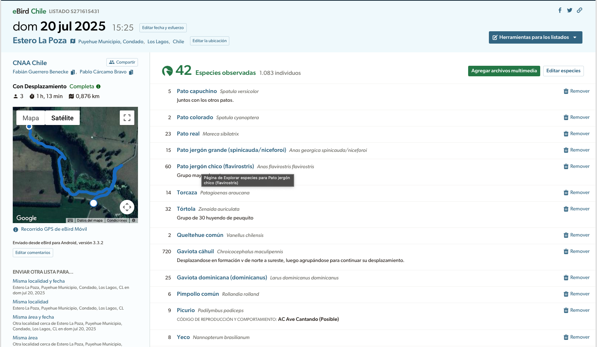

library(dplyr)
# sin pipe
mean(1:10)
#> [1] 5.5
# con pipe
1:10 %>% mean()
#> [1] 5.5
1:10 |> mean()
#> [1] 5.51 Introducción al entorno R en el contexto de eBird
1.1 Introducción
A lo largo de los ejercicios de este curso dejaremos explicaciones de las funciones utilizadas, pero si buscas profundizar en el uso de Tidyverse te recomendamos el libro en línea R for Data Science by Hadley Wickham.
1.2 Tidyverse
En el curso utilizaremos paquetes del Tidyverse, una colección de paquetes de R diseñados para el análisis de datos. Paquetes como ggplot2 (para visualización de datos) y dplyr (para manipulación de datos), son algunos de los más conocidos de la colección.
Uno de los elementos del Tidyverse que utilizaremos bastante a lo largo de este curso es el operador pipe %>% (|>). El pipe toma la expresión a su izquierda y la “canaliza” hacia el primer argumento de la expresión a su derecha.
El pipe hace que el código sea mucho más legible al evitar llamadas de funciones anidadas, reducir la necesidad de variables intermedias y permitir que las operaciones secuenciales se lean de izquierda a derecha. Por ejemplo, para agregar una nueva variable a una base de datos y luego resumir agrupando por otra variable, podemos hacer cualquiera de las siguientes opciones:
## OPCION 1 ##
# Variables intermedias
mtcars_kg <- mutate(mtcars, wt_kg = 454 * wt)
mtcars_grouped <- group_by(mtcars_kg, cyl)
summarize(mtcars_grouped, wt_kg = mean(wt_kg))
#> # A tibble: 3 × 2
#> cyl wt_kg
#> <dbl> <dbl>
#> 1 4 1038.
#> 2 6 1415.
#> 3 8 1816.
# Funciones anidadas
summarize(
group_by(
mutate(mtcars, wt_kg = 454 * wt),
cyl
),
wt_kg = mean(wt_kg)
)
#> # A tibble: 3 × 2
#> cyl wt_kg
#> <dbl> <dbl>
#> 1 4 1038.
#> 2 6 1415.
#> 3 8 1816.
## OPCION 2 ##
# uso de pipes
mtcars %>%
mutate(wt_kg = 454 * wt) %>%
group_by(cyl) %>%
summarize(wt_kg = mean(wt_kg))
#> # A tibble: 3 × 2
#> cyl wt_kg
#> <dbl> <dbl>
#> 1 4 1038.
#> 2 6 1415.
#> 3 8 1816.Como se ve en el ejercicio, el uso de pipes reduce el código evitando la creación de variables intermedias.
1.3 Software
Los ejemplos del curso usan el lenguaje R (R Core Team 2023). Si no tienes R instalado, descárgalo. Si ya lo tienes, puede que esté desactualizado: conviene actualizarlo a la versión más reciente. R se actualiza con frecuencia, y es importante contar con la versión más reciente para evitar problemas al instalar paquetes.
Recomendamos usar RStudio si eres usuario de R. RStudio no es obligatorio para seguir esta guía, pero mejora muchísimo la experiencia. Si no lo tienes, descárgalo; si ya lo tienes, actualízalo, pues regularmente aparecen versiones nuevas con características útiles.
Debido al tamaño grande del conjunto de datos de eBird, trabajar con él requiere la utilidad de línea de comandos Unix AWK. No necesitas usar AWK directamente, porque el paquete R auk se encarga de hacerlo, pero sí debes tener AWK instalado en tu computador:
En Linux y macOS ya suele venir AWK instalado.
En Windows, necesitarás instalar Cygwin, un software libre que permite usar herramientas Unix bajo Windows. Asegúrate de instalarlo en la ubicación predeterminada (por ejemplo,
C:/cygwin/bin/gawk.exeoC:/cygwin64/bin/gawk.exe) para que todo funcione correctamente. Si tienes dudas con esto, puedes volver al video introductorio en el se muestra este paso.
1.4 Datos GIS / cartográficos
Para dar contexto espacial a los análisis que realicemos, necesitaremos datos GIS (bordes políticos, límites, etc.). Natural Earth es una de las mejores fuentes de datos GIS vectoriales y raster integrados de calidad profesional. Con el paquete rnaturalearth de R pueden acceder a esos datos fácilmente desde R.
El siguiente código descarga datos cartográficos de Natural Earth y crea un archivo GeoPackage con diferentes capas geográficas de Chile.
library(rnaturalearth)
library(sf)
library(dplyr)
# Definir la ruta y nombre del archivo GeoPackage donde guardaremos todo
gpkg_file <- "data/gis-data-chile.gpkg"
# Crear el directorio 'data/' si no existe
dir.create(dirname(gpkg_file), showWarnings = FALSE, recursive = TRUE)
# Descargar y procesar territorio de Chile
#Descargar datos de todos los países del mundo
chile_land <- ne_download(
scale = 10, # scale = 10 (también existe 50 y 110)
category = "cultural",
type = "admin_0_countries_lakes",
returnclass = "sf"
) |>
# Filtrar solo Chile
filter(ADMIN == "Chile") |>
# Ajustar precisión para evitar problemas geométricos
st_set_precision(1e6) |>
# Unir todas las geometrías en una sola (incluyendo islas)
st_union()
#> Reading layer `ne_10m_admin_0_countries_lakes' from data source
#> `/private/var/folders/hl/htdls_lx1rlfx23h9wwv62xm0000gn/T/Rtmp7jdwHl/ne_10m_admin_0_countries_lakes.shp'
#> using driver `ESRI Shapefile'
#> Simple feature collection with 258 features and 168 fields
#> Geometry type: MULTIPOLYGON
#> Dimension: XY
#> Bounding box: xmin: -180 ymin: -90 xmax: 180 ymax: 83.6
#> Geodetic CRS: WGS 84
# Descargar regiones de Chile (divisiones administrativas)
# Descargar divisiones administrativas de nivel 1 (regiones/estados)
chile_regions <- ne_download(
scale = 10,
category = "cultural",
type = "admin_1_states_provinces",
returnclass = "sf"
) |>
filter(iso_a2 == "CL") |>
# Seleccionar columnas relevantes
select(
region = name # Nombre de la región
)
#> Reading layer `ne_10m_admin_1_states_provinces' from data source
#> `/private/var/folders/hl/htdls_lx1rlfx23h9wwv62xm0000gn/T/Rtmp7jdwHl/ne_10m_admin_1_states_provinces.shp'
#> using driver `ESRI Shapefile'
#> Simple feature collection with 4596 features and 121 fields
#> Geometry type: MULTIPOLYGON
#> Dimension: XY
#> Bounding box: xmin: -180 ymin: -90 xmax: 180 ymax: 83.6
#> Geodetic CRS: WGS 84
# Descargar líneas fronterizas de Chile
# Primero obtenemos TODAS las líneas fronterizas del mundo
all_country_lines <- ne_download(
scale = 10,
category = "cultural",
type = "admin_0_boundary_lines_land",
returnclass = "sf"
)
#> Reading layer `ne_10m_admin_0_boundary_lines_land' from data source
#> `/private/var/folders/hl/htdls_lx1rlfx23h9wwv62xm0000gn/T/Rtmp7jdwHl/ne_10m_admin_0_boundary_lines_land.shp'
#> using driver `ESRI Shapefile'
#> Simple feature collection with 515 features and 54 fields
#> Geometry type: MULTILINESTRING
#> Dimension: XY
#> Bounding box: xmin: -141 ymin: -55.1 xmax: 146 ymax: 70.1
#> Geodetic CRS: WGS 84
# Identificamos qué líneas intersectan con el territorio de Chile
lines_touching_chile <- st_intersects(
all_country_lines,
chile_land,
sparse = FALSE
)[,1]
# Filtrar solo las líneas que tocan Chile (fronteras con Argentina, Perú, Bolivia)
chile_country_lines <- all_country_lines[lines_touching_chile,] |>
st_geometry()
# Descargar líneas entre regiones
# Descargar líneas de divisiones administrativas nivel 1
all_region_lines <- ne_download(
scale = 10,
category = "cultural",
type = "admin_1_states_provinces_lines",
returnclass = "sf"
)
#> Reading layer `ne_10m_admin_1_states_provinces_lines' from data source
#> `/private/var/folders/hl/htdls_lx1rlfx23h9wwv62xm0000gn/T/Rtmp7jdwHl/ne_10m_admin_1_states_provinces_lines.shp'
#> using driver `ESRI Shapefile'
#> Simple feature collection with 10179 features and 57 fields (with 1 geometry empty)
#> Geometry type: MULTILINESTRING
#> Dimension: XY
#> Bounding box: xmin: -178 ymin: -49.3 xmax: 178 ymax: 81.1
#> Geodetic CRS: WGS 84
# Filtrar líneas que intersectan con Chile
lines_in_chile <- st_intersects(
all_region_lines,
chile_land,
sparse = FALSE
)[,1]
chile_region_lines <- all_region_lines[lines_in_chile,] |>
st_geometry()
# Guardar todas las capas en el GeoPackage
write_sf(chile_land, gpkg_file, "chile_territorio")
write_sf(chile_regions, gpkg_file, "chile_regiones")
write_sf(chile_country_lines, gpkg_file, "chile_fronteras")
write_sf(chile_region_lines, gpkg_file, "chile_limites_regionales")2 Datos de eBird
2.1 Acceso a datos de eBird
El acceso a la base de datos de eBird se proporciona a través del eBird Basic Dataset (EBD) como archivos de texto separados por tabulaciones. Para acceder al EBD, comienza creando una cuenta de eBird e iniciando sesión. Luego visita la página de Acceso a Datos de eBird y completa el formulario de solicitud de datos. El acceso a los datos de eBird es gratuito para la mayoría de los usos; sin embargo, necesitarás solicitar acceso para poder descargar el EBD. Completar el formulario de solicitud de acceso permite a eBird hacer seguimiento del número de personas que usan los datos y obtener información sobre las aplicaciones para las cuales se utilizan los datos.
Una vez que se te haya otorgado acceso al EBD, podrás descargar ya sea el conjunto de datos completo de eBird o subconjuntos para especies, regiones o períodos de tiempo específicos. Esto se lo veremos con más detalle en la última sección.
Los datos de eBird se organizan en checklist, estos listados representan observaciones de un único evento de observación de aves, como una caminata de 1 km por un parque o 15 minutos observando comederos en tu jardín. Cada listado incluye las especies observadas, el número de individuos vistos de cada especie, la ubicación y hora de las observaciones, información sobre el tipo de muestreo realizado, y medidas del esfuerzo invertido durante la recolección de datos. La siguiente imagen muestra una lista típica de eBird tal como se ve en el sitio web de eBird:

Hay tres características clave que distinguen a eBird de muchos otros proyectos de ciencia ciudadana y que facilitan análisis ecológicos robustos. Primero, los observadores especifican el protocolo de muestreo utilizado, ya sea en tránsito, estacionario, incidental (es decir, si las observaciones se recolectaron cuando observar aves no era la actividad principal). Segundo, además de la información usual sobre cuándo y dónde se hicieron las observaciones, los observadores registran información de esfuerzo especificando cuánto tiempo buscaron, qué distancia recorrieron y el número total de observadores en su grupo. Recolectar estos datos facilita análisis robustos al permitir a los investigadores controlar la variación en el proceso de observación (La Sorte et al. 2018; Kelling et al. 2018). Finalmente, se pide a los observadores que indiquen si están reportando todas las aves que pudieron detectar e identificar. Las listas con todas las especies reportadas, conocidas como listas completas, permiten a los investigadores inferir conteos de cero individuos para las especies que no fueron reportadas. Si las listas no son completas, no es posible determinar si la ausencia de una especie en la lista fue una no detección o el resultado de que el participante no registró la especie.
Los proyectos de ciencia ciudadana ocurren en un espectro, desde aquellos con estructuras de muestreo predefinidas que se asemejan más a diseños tradicionales de muestreo (como el Breeding Bird Survey en Estados Unidos), hasta aquellos que no están estructurados y recolectan observaciones de manera oportunista (como iNaturalist). Nos referimos a eBird como un proyecto semi-estructurado (Kelling et al. 2018), con protocolos flexibles y fáciles de seguir que atraen a muchos participantes, pero que también recolectan datos sobre el proceso de observación y permiten inferir no detecciones en listas completas.
2.2 Descarga de datos
Los datos de eBird se distribuyen típicamente en dos partes: datos de observación y datos de lista. En el conjunto de datos de observación, cada fila corresponde al avistamiento de una única especie en una lista, incluyendo el conteo y cualquier otra información a nivel de especie (por ejemplo, edad, sexo, comentarios sobre la especie, etc.). En el conjunto de datos de lista, cada fila corresponde a una lista, incluyendo la fecha, hora, ubicación, esfuerzo (por ejemplo, distancia recorrida, tiempo invertido, etc.) y cualquier información adicional a nivel de lista (por ejemplo, si es una lista completa o no). Estos dos conjuntos de datos pueden unirse usando un identificador único de lista (a veces referido como identificador de evento de muestreo).
Los datos de observación y lista se publican como archivos de texto separados por tabulaciones, referidos como el eBird Basic Dataset (EBD) y el Sampling Event Data (SED), respectivamente. Estos archivos se publican mensualmente y contienen todos los avistamientos de aves validados en la base de datos de eBird al momento de la publicación. Ambos conjuntos de datos pueden descargarse en su totalidad, o de manera más práctica, se puede solicitar un subconjunto para una especie, región o período de tiempo determinados a través del formulario de Descarga Personalizada (Custom Download). Recomendamos enfáticamente no intentar descargar el EBD completo, ya que supera los 100GB. En esta sección demostraremos un flujo de trabajo usando el enfoque de Descarga Personalizada.
Comenzaremos descargando los datos de observación (EBD) y de lista (SED) de eBird correspondientes visitando la página de descarga del eBird Basic Dataset y completando el formulario de Descarga Personalizada. Asegúrate de marcar la casilla “Include sampling event data”, que incluirá el SED en la descarga de datos además del EBD.

Una vez que los datos estén listos, recibirás un correo electrónico con un enlace de descarga. Los datos descargados estarán en formato comprimido .zip y deberán descomprimirse. El directorio resultante contendrá dos archivos de texto: uno para el EBD (por ejemplo, ebd_CL-LL_smp_relAug-2025.txt) que contiene todas las observaciones del país y uno para el SED (por ejemplo, ebd_CL-LL_smp_relAug-2025_sampling.txt) que contiene todas las listas de la región de Los Lagos. El componente relAug-2025 del nombre de los archivos describe qué versión del EBD es este conjunto de datos; en este caso, es la versión de agosto de este año.
Dado que el EBD se actualiza mensualmente, probablemente recibirás una versión diferente de los datos que la versión de agosto de 2025 usada a lo largo del resto de esta lección. Siempre que actualices los nombres de los archivos descargados en consecuencia en tus códigos, la diferencia en versiones no será un problema. Sin embargo, si quieres descargar y usar exactamente los mismos archivos usados en esta lección, puedes descargar el archivo zip del EBD correspondiente.